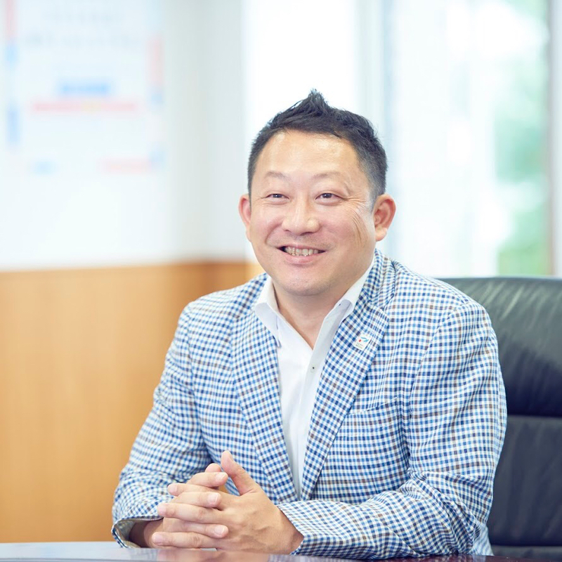
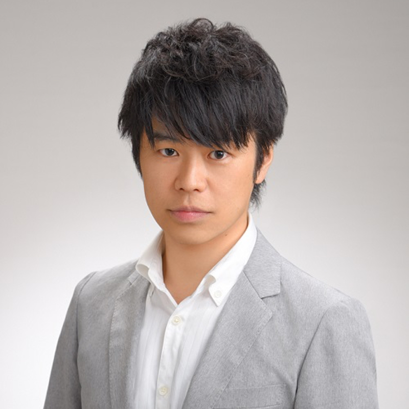
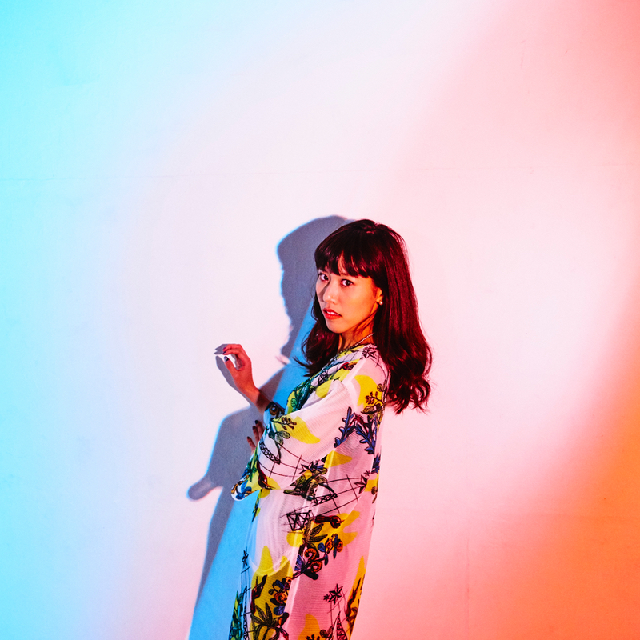

人工知能などのイノベーションにより定型的なタスクが自動化されていき、社会で求められる「仕事」の質も大きく変わりつつあります。人工知能と私たちの未来はどこへ向かうのか、人間に求められる能力はどう変わっていくのか。
未来の教育について考える日「NEXT DAY 2019」では、これからの社会で教育が担うべき役割や本質について、クリエイター・研究者・教育者・学生や生徒の立場から考えました。
開催レポート

未来の教育を考える日「NEXT DAY 2019」
日時：2019年1月26日 13時30分～18時
会場：大阪大学中之島センター 佐治敬三メモリアルホール
会場：大阪大学中之島センター 佐治敬三メモリアルホール
開催概要
未来の教育を考える日「NEXT DAY 2019」
日時：2019年1月26日 13時30分〜
会場：大阪大学中之島センター 佐治敬三メモリアルホール
参加費：学生1000円、一般1500円
定員：144名（事前登録制）
対象：教育関係者、学生・生徒ほか
共催：Global Shapers 大阪ハブ、人工知能研究会 / AIR、大阪大学 共創機構 渉外本部
後援：情報処理学会、人工知能学会、全国高等学校情報教育研究会
プログラム
開会挨拶
13時30分〜
佐久間洋司（世界経済フォーラム Global Shaper・人工知能研究会 / AIR 代表）
１．基調講演 13時40分～14時10分
船橋力（世界経済フォーラム Young Global Leader・トビタテ！留学JAPAN プロジェクトディレクター）
２．パネルディスカッション 14時15分～15時50分
井上智洋（駒澤大学経済学部准教授）
草野絵美（アーティスト・Satellite Young 主宰）
はなお（動画クリエイター）
司会：船橋力
３．分科会 16時～16時50分、17時〜17時50分
講義室404：井上智洋（進行：古屋俊和）
講義室703：はなお・船橋力（進行：井上昂治）
講義室405：草野絵美（進行：堀口修平）
閉会挨拶・写真撮影 18時〜
ご登壇者様
NEXT DAY 2019では、学校教育のあり方から未来の教育まで議論してきたこれまでの「NEXT DAY」を継承しながらも、人工知能などのテクノロジーがもたらす社会変革、それに伴うこれからの教育について深めていくことを目指して議論いただきました。

文部科学省 トビタテ！留学JAPAN プロジェクトディレクター
船橋力
世界経済フォーラム Young Global Leader文部科学省 トビタテ！留学JAPAN プロジェクトディレクター
BIO
1994年、上智大学卒業後、伊藤忠商事株式会社に入社し、ODAプロジェクトを手がける。2000年、株式会社ウィル・シードを設立し、企業と学校向けの体験型・参加型の教育プログラムを提供する事業を手がけた。2009年には世界経済フォーラムのヤング・グローバル・リーダーに選出。現在は、文部科学省・官民協働海外留学創出プロジェクトのプロジェクトディレクターを務める。

井上智洋
駒澤大学経済学部 准教授
BIO
慶應義塾大学環境情報学部卒業。 2011年 早稲田大学大学院経済学研究科で博士号を取得。早稲田大学政治経済学部助教、駒澤大学経済学部講師を経て、2017年～駒澤大学経済学部准教授。専門はマクロ経済学。最近は人工知能が経済に与える影響について論じることが多い。2016年12月 日経ビジネス「次代を創る100人」に選ばれる。

草野絵美
アーティスト・SATELLITE YOUNG 主宰
BIO
1990年東京出身。慶應義塾大学湘南藤沢大学 環境情報学部卒業。作品制作・執筆・ラジオやTVのMC・CM出演など活動の傍ら、歌謡エレクトロユニット《Satellite Young》を主宰。歌唱・作詞作曲・コンセプトワークを行う。再構築された80’sサウンドにのせて人工知能やオンライン交際など現代のネット社会や最新テクノロジーをテーマに歌う。2017年には世界最大の音楽フェス『South by South West』にSatellite Youngとして出演。現在CMが放送中の参天製薬『サンテPC』2018年度イメージキャラクター就任、BS日テレ『SENSORS』ではMCを担当。
はなお
動画クリエイター
BIO
大阪大学卒業。UUUM株式会社に所属する動画クリエイター。チャンネル登録者数100万人を突破したトップYouTuberの一人で、学生・受験生から絶大な人気を誇る。理系知識を駆使した検証や実験、計算など様々なことに挑戦する動画をアップロードしている。受験生向けの勉強動画はもちろん、仲間たちとの掛け合いが楽しい笑いあり、ほのぼのありな動画も見逃せない。
パネルディスカッションの様子


{kind=link}
{kind=link}
{kind=link}
{kind=link}
分科会レポート
NEXT DAY 2019では3つの部屋に分かれて分科会を実施しました。その中でも特に反響のあったQ&Aをこちらでご紹介します。
はなお様・船橋力様・小幡和輝（講義室703）
進行：中村孝一
こちらの分科会では、先のパネルディスカッションを受けて、二つの問いを登壇者に投げかける形としました。また、大阪ハブから教育分野でのユニークな経験を持つ小幡和輝にも登壇させてもらう形としました。
子どもが（私が）楽しいこと、打ちこめることを見つけるには？
はなお様「高校生の頃はニコ動にはまっていた。その頃から、少しずつ歌マネをしたりなど、動画の投稿を（ニコ動に）するようになった。ほとんどの動画は数十回程度の再生だったが、たまに数千回程度見てもらえる動画があり、コメントなどをもらえると、すごく嬉しかった。大学に入ってからは、3年生頃に動画クリエイターという存在を知った。テレビなどのマスメディアとは違い、いきなりデビューからヒットするわけではなく、だんだんとファンを作り、巻き込みながら成長していく動画クリエイターに憧れを持っていた。再び動画を投稿するようになり、当初は部活動のような位置付けで大学時代でどこまで伸ばせるかに夢中になっていた。（友人などに）動画を見られたら恥ずかしい、失敗したらどうしようなどよりも、圧倒的に「好きだからやる。楽しいからやる」が勝っていて、それが原動力になっていた。」
小幡「小学校時代から不登校だったが、不登校になってからの方が明るくなり、友達も増えたという少し変わった状態。同時期にいとこが不登校になり、いとこに大きな影響を受けた。TVゲームやカードゲームなどを2人でやり込み、その分野で人に認められたり、大会で優勝できたことが肯定感につながったと思う。不登校になって一番問題なのは、そうした好きなことや楽しいことと出会うきっかけや場所を失ってしまうこと。好きなことや楽しいことを見つけるには、周りの人の影響が大きいと思う。」
船橋様「トビタテにくる学生を見ていると、大きく2つのタイプに分けられる。理系に多いのが「好きなことにはまり込んだ没頭型」。話していても、ずっとその話ばかりをしていて、本当に好きなんだなというのがわかる。もう１つが「この課題を解決したいという課題解決型」。途上国の貧困をなくしたい。自分自身が貧しい家庭に育って……など原体験に基づくことが多い。こちらは「好き」ではなく、やる「べき」だから取り組むという感じ。そのため、「好きなこと」をすべての人が見つけないといけないわけではない。ただ、好きなことや課題だと感じるきっかけは必要。だから、学校にはいろいろな専門家の人に関わってほしいし、一人の先生が担任する・教えるということの弊害も大きいと思う。先生は、ファシリテーターに徹していくべき。」
「楽しいこと」を仕事にするには？１歩を踏み出すには？
はなお様「（動画クリエイターにとっての１歩である）最初の動画を投稿することについては、なんの躊躇もなかった。面白そうだから、自分もやってみたいというだけ。一方で、進路を考えるタイミングでは、葛藤もあった。就活もして内定ももらっていたが、最終的には「動画クリエイターとしてやっていきたい」「好きなことをやりたい」という思いが勝り、内定を断って、動画クリエイターでやっていくことにした。ただ、その頃にはチャンネル登録者も50万人以上おり、一定の収入は期待できる状態にはあった。」
小幡「（はなおさんの言うとおり）好きなことがすぐに食べていける仕事になるわけではない。そのためにも早く始めることが大事。特に学生時代は失敗しても、ほとんどリスクがない。自分も18歳で起業し、大学へ行き、その間に十分な助走期間を取ることができた。今食べていけてるのは、その期間があったから。」
船橋様「（先述の２つのタイプに共通するのは）エネルギーを持っていると言うこと。好きなことに没頭する、留学する、仕事にしていくためには、エネルギーが必要。何事ものめり込まないとモノにならない。」
井上智洋先生（講義室404）
進行：古屋俊和
学校で働いているがやる気のある先生ほど仕事が多くなるので悩んでいるのでアドバイスがほしい
井上先生「学校でも効率的に働くためには工夫が必要である。その工夫の一つとして、人工知能（AI）やツールを活用していくことも考えられる。あるいは、教材の見た目などにこだわりすぎなくても良いのではないか。」
今後の日本の労働者はどうなっていくか？
井上先生「例えばアメリカでは、すでにAI以前のITの発展でも多くの仕事がなくなっており、仕事を失った中間所得層の多くは、高所得層ではなく低所得層の多く従事する仕事に転職している。その結果として、トランプ政権のような移民を排除しようとする政府も出来たのではないか。日本はベーシクインカム（BI）の導入で、必ずしも労働しなくても生きることができる社会を目指せば良いのではないかと思う。」
AI・ロボットで雇用がなくなったらどう生きるか？
井上先生「BIを支給されて、その範囲内では好きなことが出来るという時代に。怠けたい人は怠ければ良いと思う。怠けるのも個性であり、その個性がBIで守られる。やりたい仕事をする、AIを作りたい人はAIを作れば良い。YouTuberのような仕事も選べるようになる。ただし、トップYouTuberのような人はごく一部。」
草野絵美様（講義室405）
進行：荒木義惣、堀口修平
子どもの育て方についてはどんな方針をもっているか？
草野様「情報のキュレーションをしている。情報が溢れすぎているから、まだ子どもが自身の端末を持たない今のうちは、キュレーションが必要だと思っている。与える情報の精度に気を使いながら、ツールを最大限活用したい。例えば、今はゲーム系アプリや図鑑を子どもの興味に合わせてコーディネートしている。」
家庭での教育、学校での教育、外部での教育での教えはどう分けているのか？そして、未来の教育はどうなるのか？
草野様「家庭では極力子どもに対して強制的な発言をしないように心がけ、いろんな選択肢の中で、子どものパッションに注意していち早く気付き、本人のやりたいことをサポートすることが大切だと考えている。学校での教育は、一人一人の学生が興味のある事を発言出来る場であったり、それをテクノロジーによって分析できるようになったりしたらいいと思う。そして、家庭や学校に囚われることなく、外部の教育や環境も活用していきたい。」
参加者の感想
"型にはめ込むようなこれまでの教育ではなく、様々な経験から学ぶことで、自分の得意とすることを見出し、伸ばしていくことが大切だという話に共感しました。"
"登壇者の皆さんの背景や価値観、活動が異なっておられて、勉強になりました。キャリアは多様であると分かりつつ、つい画一的な生き方に入ってしまうので。"
"これからの子供たちが学ぶ教育はどうあるべきかを考える参考になりました。予測不可能な社会で子供たちがたくましく生きていくためにできる力を養う教育とは何か考えていきたいと思います。"
運営委員会
運営委員長：佐久間洋司
Global Shapers 大阪ハブ：荒木義惣、岩花玄、小幡和輝、角谷直人、日下部淑世、山東晃大、寺本将行、中村孝一、吉川雄介、渡辺直樹
人工知能研究会 / AIR：井上昂治、兼平篤志、古屋俊和、堀口修平、椎名瞳
大阪大学 共創機構 渉外本部：永峯隆志、中川典哉